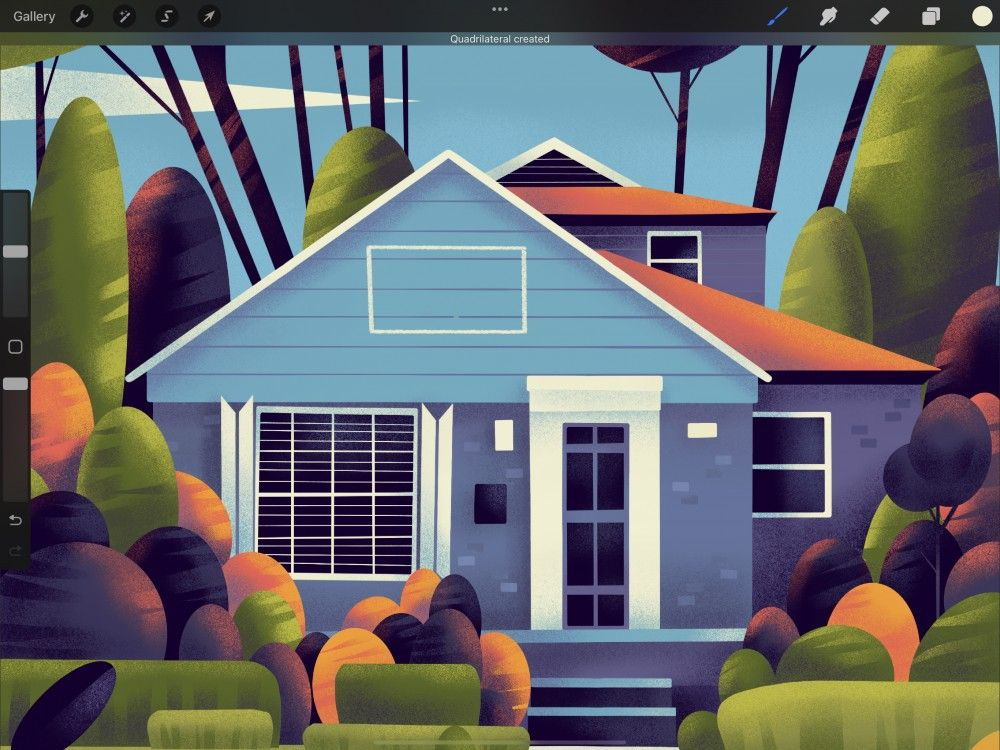
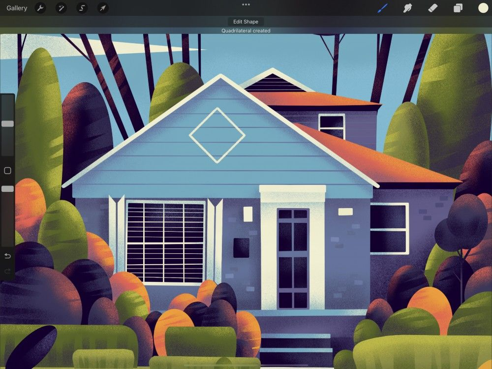
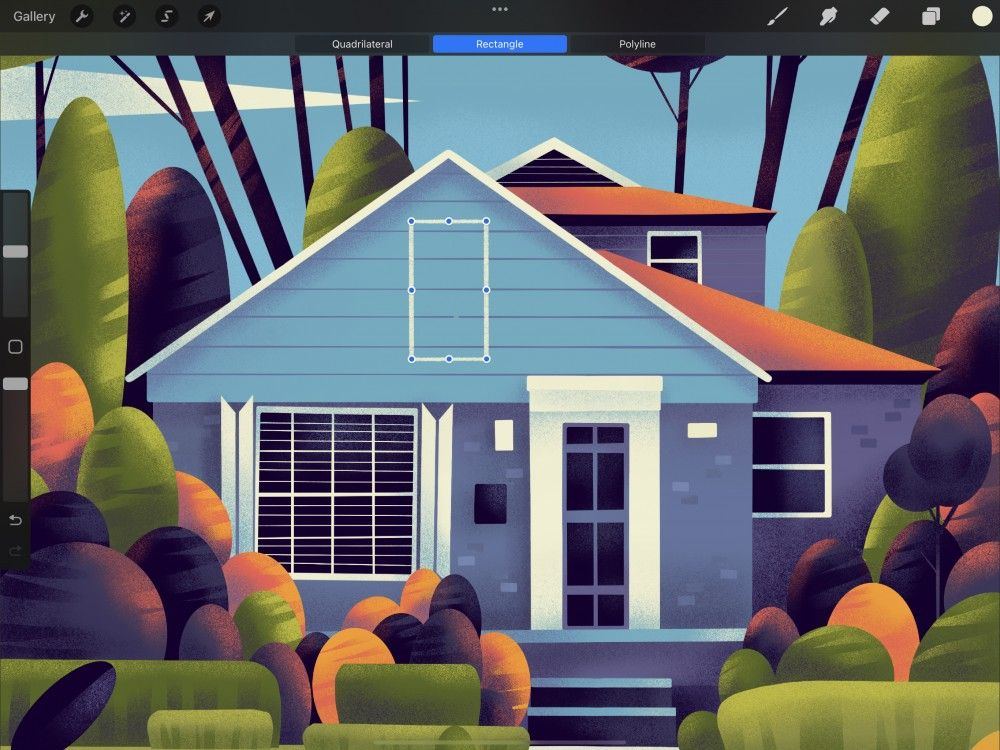
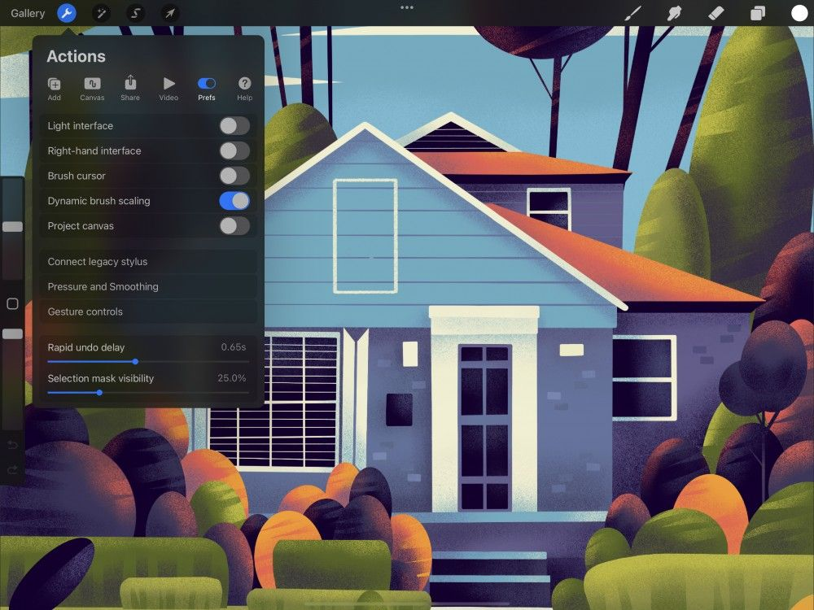

📖 Đã dịch sang tiếng Việt. Thuật ngữ chuyên môn giữ tiếng Anh — rê chuột để xem nghĩa (tooltip).
QuickShape
QuickShape cán các đường nét và hình khối vẽ tay thành những hình hoàn hảo chỉ trong chớp mắt.
Tạo QuickShape
Vẽ một đường hoặc hình, rồi giữ ngón tay trên khung vẽ.

Một lát sau, QuickShape sẽ tự động kích hoạt. Nét vẽ của bạn sẽ ‘cán’ thành một đường thẳng, cung tròn, đường gấp khúc, hình ellipse, tam giác hoặc tứ giác hoàn hảo.
Cán nét thành hình hoàn hảo
Nếu hình bạn tạo không cân, hãy tiếp tục giữ nó, và đặt ngón tay thứ hai lên khung vẽ. Thao tác này biến hình chữ nhật thành hình vuông, hình oval thành hình tròn, hoặc tam giác không đều thành tam giác đều.

Đổi tỉ lệ và xoay
Để đổi tỉ lệ hoặc xoay một hình vừa tạo, đỡ rời ngón tay khỏi khung vẽ. Tiếp tục giữ, rồi kéo để điều chỉnh tỉ lệ và độ xoay của hình hoặc đường.


Xoay theo nam châm
Để xoay hình theo các bước chính xác, hãy giữ ngón tay thứ hai trên khung vẽ trong khi kéo hình. Điều này cho phép bạn xoay hình theo từng bước mười lăm độ.
Chỉnh sửa QuickShape
Khi bạn nhả hình, nút Edit Shape (chỉnh sửa hình) sẽ xuất hiện trong thanh thông báo ở trên cùng khung vẽ.
Nếu không muốn chỉnh sửa, hãy tiếp tục vẽ, hoặc chạm bất kỳ đâu để bỏ nút.
Để chỉnh sửa hình, hãy chạm nút Edit Shape để vào chế độ QuickShape Edit (chỉnh sửa QuickShape).
Chỉnh sửa hình (Edit Shape)
Trong chế độ Edit Shape, các tùy chọn sẵn có được quyết định bởi hình ban đầu của bạn. Chúng xuất hiện thành các nút trong thanh thông báo.

Biến đổi (Transform)
Trong chế độ Edit Shape, các nút biến đổi xuất hiện trên hình. Chúng cho phép bạn kiểm soát chính xác hơn. Kéo một nút để điều chỉnh phần tương ứng của hình.
Để đổi tỉ lệ hình đồng nhất, hãy kéo chính hình tại bất kỳ vị trí nào giữa các nút.
Commit
Khi xong, hãy chạm bất kỳ đâu trên khung vẽ để thoát chế độ Edit Shape.
Thiết lập
Kiểm soát công cụ của bạn bằng các phím tắt tùy chỉnh.

Để kiểm soát QuickShape chi tiết hơn, hãy vào Actions → Prefs (tùy chọn) → Gesture Controls (điều khiển cử chỉ) → QuickShape.
Tại đây bạn có thể thiết lập và điều chỉnh nhiều phím tắt và thiết lập cảm ứng, Apple Pencil để tích hợp QuickShape vào quy trình của mình.
Still have questions?
If you didn't find what you're looking for, explore our video resources on YouTube or contact us directly. We’re always happy to help.